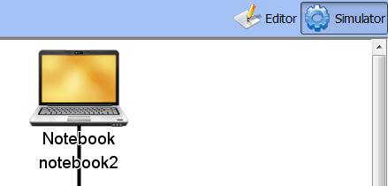
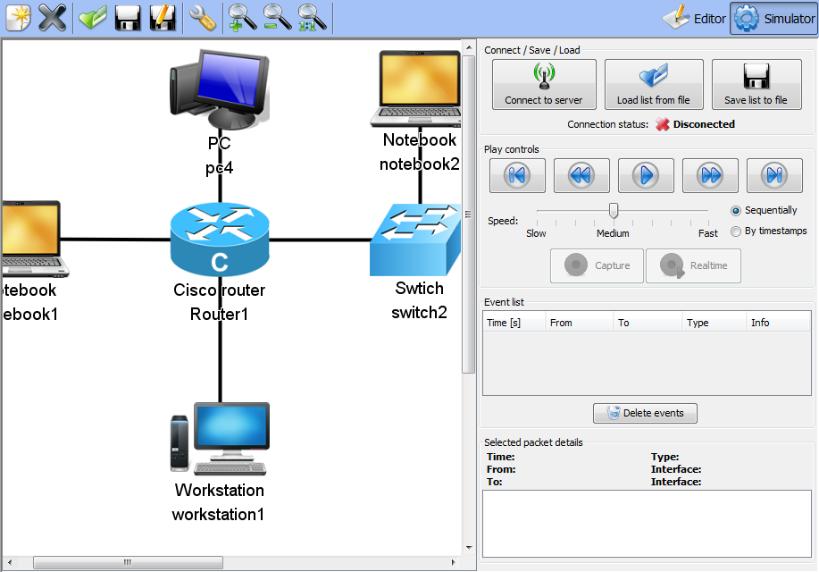

Tutorial 2: Simulator mode
- Simulator mode
- Connecting to simulator
- Event recieving, moving in event list
- Event playing
- Save / Load event list
Simulator mode
Load previously saved network
First, load some network using Open button. It can look like this one:

Switching to simulator mode
Switch to simulator mode using Simulator button (top right corner):
Simulator mode
In simulator mode no network changes are allowed. You can only use zoom and move the whole network in window. The toolbar on left is hidden and on the right side there is a Control panel.
Next part of this tutorial is: Connecting to simulator.